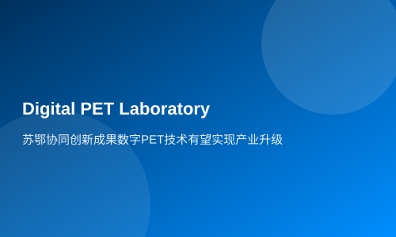

苏鄂协同创新成果数字PET技术有望实现产业升级
新华网湖北频道2月27日电（熊少翀）在2月25日举行的2013年度湖北省科学技术奖颁奖大会上，一个名为“小型数字PET成像关键技术”的项目脱颖而出，摘得技术发明奖一等奖。
前不久，数字PET（正电子发射断层成像仪）技术刚刚获得国家重大科学仪器设备开发专项，项目总经费为8180万元，其中国拨专项经费5920万元，如今再次传来捷报。有专家认为，数字PET技术可望实现中国尖端28医学影像设备的产业升级和跨越式大发展。
两地协力攻关
“小型数字PET成像关键技术”项目由苏州瑞派宁科技有限公司和华中科技大学数字PET实验室合作研发。它以PET实验室自主发明的MVT（多电压阈值）方法为基础，经过数十名研究人员多年研究，先后完成了电子学、探测器、系统三个层面的技术创新，第一次从源头上解决了PET脉冲信号数字化这一世界性难题。
项目负责人、武汉光电国家实验室（筹）研究员、华中科技大学生命学院教授谢庆国认为，产业化对技术研发产生了巨大的推动作用。由于企业更懂得市场需求，从而可以指引仪器研究对准实用方向，比如适应性功能的开发，变结构PET等，使得研发出来的仪器马上能最大限度在应用领域发挥作用。此外，企业具有更严格的工程标准，可以加速研究成果产品化，使实验室研制的样机也具有成熟产品一样的稳定性能。
本着以最快速度把新技术转化成产品造福社会的初心，谢庆国决定，实验室不停留在以专利和文章作为评价标准，而是直面实际而迫切的社会需求，把产业化当成了更高层次的目标。
苏州瑞派宁科技有限公司成为了实验室实现这一目标的最大助力。从创新方法到创新技术再到创新仪器的产业化之路，因为有市场需求指引和企业标准的推动，数字PET研发团队摸索到这条最快的直达通道。
2010年，世界上首台全数字PET样机——Trans-PET在实验室和瑞派宁的共同努力下问世。在此基础上，瑞派宁进一步发挥了企业在产品上的优势，Trans-PET® BioCaliburn® 系列产品应对不同的市场需求，相继被开发并投入应用单位，迅速在生物医学基础研究和药物开发等领域发挥出价值。
数字PET优越在哪里
武汉地区目前有五家PET中心。中国工程院院士、华中地区PET应用奠基人樊明武说：“当初积极地推广PET应用事业，是看到了它对社会的不可估量的价值，因为它在重大疾病的诊疗上有不可替代的优势。”
而作为PET应用推广的积极践行者，华中科技大学附属同济医院核医学科、PET中心主任朱小华教授认为，数字PET不仅能够实现癌症的早期诊断、早期治疗，而且能够提供个性化精准治疗。
这是因为，数字PET不仅拥有比其他医疗影像设备更高的分辨率和灵敏度，而且拥有适应性校正系统，在临床中会越用越准。数字PET的另一项优越之处是模块化设计，它将使数字PET仪器随着消费电子的更新换代而不断降低成本。
朱小华认为，武汉已经形成了数字PET的应用高地。她非常希望在不久的将来，武汉能在国家的支持下，成立华中地区数字PET应用示范中心，从而更好地应用推广，尽快为患者带去福音。
产学研用的思路受到鼓舞
据了解，湖北省科学技术奖由湖北省科技厅组织评选，为鼓励自主创新、鼓励成果应用转化和“产学研用”合作而设立，包含了自然科学奖、技术发明奖、科技进步奖、中小企业创新奖等单项，其评审流程十分严格，复评评审全部来自于领域权威的专家，代表了湖北省内科技界的最高奖项。
其中技术发明奖主要授予运用科学技术知识做出产品、工艺、材料及其系统等重大技术发明的公民、组织，要求参与评选的成果应是已取得发明专利授权，并进行了湖北省科技成果登记的成果，整体应用于生产实践满3年以上。
本年度技术发明奖单项受理了来自湖北省科技厅、各市科技局及各知名大学等单位的参评项目共46项，最终评选出三等奖14项，二等奖8项，一等奖9项。其中“数字PET成像关键技术”是今年核医学成像领域唯一获得该奖项的研究成果。
“能够从科教大省的诸多竞争者中脱颖而出，这对于PET实验室和瑞派宁一同践行产学研用相结合的发展思路是极大的鼓励。”谢庆国介绍，接下来他们将更加积极地发挥技术优势，利用国家重大仪器专项等基金的支持，加速临床PET研发，并凝聚起更多的力量来推动整个PET产业链的发展，让数字PET早日服务大众。
据透露，华中科技大学依托PET实验室研究成果，在武汉市政府的支持下，正在积极筹备组建一家专门围绕临床PET的医学影像仪器相关产业公司，预计数月之内就能正式注册成立。这是数字PET产业链布局中十分重要的一环，它将成为苏州瑞派宁科技重要的合作伙伴，苏鄂两地的协同创新，有望开始产业化升级。